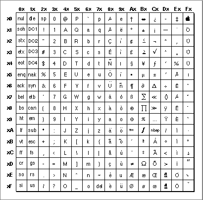
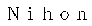
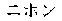
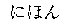
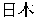
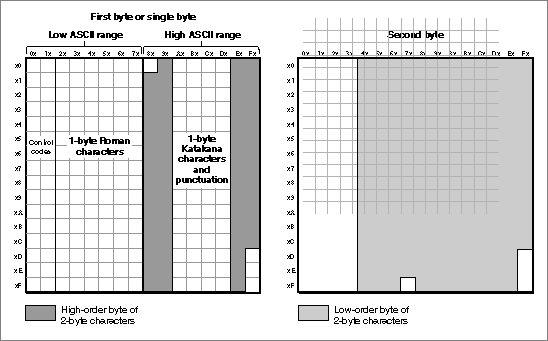
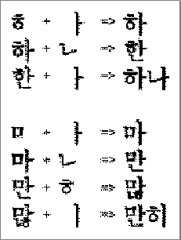

Legacy Document
Important: The information in this document is obsolete and should not be used for new development.
Important: The information in this document is obsolete and should not be used for new development.


Character Encoding
Character encoding is the organization of the set of numeric codes that represent all the meaningful characters of a script system in memory. Each character is stored in memory as a number. When a user enters characters, the user's keypresses are converted to character codes; when the characters are displayed onscreen, the character codes are converted to the glyphs of a font.There are two fundamental classes of character encodings supported by Macintosh system software: 1-byte and 2-byte. A 1-byte encoding represents every character with a 1-byte number; a 2-byte encoding (actually a mixed encoding) represents characters with either 1-byte or 2-byte numbers. There can be up to 256 characters in a character set that has 1-byte encoding, whereas there can be over 28,000 characters in a character set that has the currently supported 2-byte encoding. Roman and many other script systems use 1-byte encodings; Chinese, Korean, and Japanese script systems use 2-byte encodings.
The meaning of each character code is unique only within its script system. In an Arabic font, the code $CC represents the character jiim, and in a standard Roman font, the code $CC represents the character Ã. The traditional Chinese and simplified Chinese script systems are two different script systems and use different character encodings; the Chinese characters used in the Japanese and Korean script systems have still different character encodings.
Much of a script system's behavior, including sorting and composition rules for drawing and measuring, is encoded in tables that rely on a particular order of character codes. Therefore, the character encoding is fixed; it cannot be changed without significant consequences. Ideally, each script system is consistent in its character encoding; all fonts within a script system should have identical font layouts that reflect that encoding. This is largely true, with the exception of some Roman fonts; Symbol font, for example, is a Roman font but its glyphs are completely different from those of other Roman fonts.
The character set of a script system can include the characters of one or more subscripts. A subscript is a portion of a script system that has its own character set and conventions for use. Subscripts within the Japanese script system, for example, include the Katakana and Hiragana syllabic characters. All non-Roman script systems include Roman as a subscript. The parts of a script system's character set that implement its natural writing system are called native characters. In the Arabic script system, Arabic characters are native and Roman characters constitute a subscript.
- The Unicode standard
- Unicode is an ISO standard for 16-bit universal worldwide character encoding. It has been developed by a consortium that includes Apple Computer, Inc. In the future, Unicode will replace individual script systems' character encodings with one complete 16-bit character encoding applicable worldwide to all characters in all languages. The script systems described in this book do not yet use Unicode encodings.

- With a universal character encoding such as Unicode, the character sets of separate writing systems do not overlap; there is no need to define script systems, because each character code by itself determines which writing system the character is part of. Furthermore, Unicode takes care of the problem of conflicting character encodings within a single writing system; for example, in Unicode, there is no overlap between Roman character codes and the codes of the symbols in Symbol font.
The Standard Roman Character Set
The Apple Standard Roman character set is the 1-byte character encoding for the Roman script system. It is the fundamental character set for the Macintosh computer, and is built into every Macintosh throughout the world.This character set (see Figure 1-36) uses all character codes from $00-$FF, and includes uppercase versions of all of the lowercase accented Roman characters, a number of symbols, and other forms. A complete set of glyphs for all characters is available in most outline fonts, but not all characters are represented in the Apple bitmapped versions of Chicago, Geneva, New York, and Monaco.
The Standard Roman character set is an extended version of the original Macintosh character set, as described in Volume I of the original Inside Macintosh. It adds characters with codes from $D9-$FF, which are empty in the original Macintosh character set. Like the original Macintosh character set, the Standard Roman character set is an extended version of the ASCII character set. The ASCII character set, sometimes called low ASCII, is the traditional but limited character encoding for English-language computer systems. It uses character codes from $00-$7F only, and includes uppercase and lowercase letters, numerals, a few symbols, and a set of control (nonprinting) characters. The Standard Roman character set includes all the ASCII character codes and adds the characters (sometimes called high ASCII) with codes from $80-$FF.
The Standard Roman character set is implemented by the U.S. keyboard-layout resource (type =
'KCHR', ID = 0) and other Roman keyboard layouts. The Standard Roman character set and its sorting and formatting rules form a baseline which other
script systems adopt, modify, or replace as their needs align with or diverge from the Roman conventions.Figure 1-36 The Standard Roman character set
 In Figure 1-36, note that each character code is represented by a two-digit hexadecimal number. The first digit is determined by the column, and the second by the row. For example, the character code for \x8F is $A6 (from column Ax at row x6).
Inconsistencies in Roman Character Encoding
For historical reasons, Roman character encoding has not always been consistent. The Roman script system in particular contains many fonts with unique glyphs that are not part of the Standard Roman character set. Since the character encoding is limited to 256 values, fonts such as Symbol, ITC Zapf Dingbats\xC6, and other specialized fonts override the standard Roman character encoding. For example, in the standard Roman character set $70 corresponds to lowercase "p", but it is the numeric symbol for pi ("p") in the Symbol font, an outlined square ("p") in ITC Zapf Dingbats, and the musical symbol pianissimo for play quietly in the Sonata font. Hence, be aware that a Roman character code may have different interpretations in different fonts.
Furthermore, different variations of the Roman script system can have slightly different character encodings to allow for their slightly different character sets. This situation occurs only in the Roman script system; other script systems have uniform character encodings. The Roman character set and its variations are described in more detail in the appendix "Built-in Script Support" in this book.
Other 1-Byte Character Encodings
All 1-byte simple script systems have character encodings that can be thought of as simple substitutions for parts of the standard Roman character set. As noted previously, some encodings, such as Croatian or Turkish, replace or relocate relatively few characters, and are still considered Roman scripts.Other encodings for 1-byte simple script systems, such as Central European or Cyrillic, replace much of the high-ASCII range of the Standard Roman character set (code values from $80 to $FF) with a different alphabet.
The 1-byte complex script systems replace the same general range of Roman characters as do the 1-byte simple script systems, but they also define additional text forms in order to accommodate extensive use of ligatures or other contextual variations.
For all 1-byte script systems, the character sets include the standard low-ASCII control characters (code values from $00 to $1F) and Roman characters (code values from $20 to $7F). This allows users to enter Roman text, including western numbers, without having to switch script systems. It also allows applications to display low-ASCII Roman text regardless of the font in the current graphics port. It also means that control characters are interpreted as control characters in any script system. Figure 1-37 shows the general scheme of character encoding for 1-byte script systems.
Those 1-byte complex script systems that need more contextual forms than can fit in the high-ASCII range solve the problem through associated fonts and fonts with special glyph codes, rather than by changing any of the low-ASCII character encoding. See the discussion of associated fonts in "Font Handling" beginning on page 1-60.
Figure 1-37 Character encodings for 1-byte script systems
2-Byte Character Encodings
Worldwide, the majority of script systems have character encodings that can fit within the limits set by the size of a byte, which permits up to 256 distinct characters. However, Asian scripts with ideographic characters, such as Chinese and Japanese, require thousands to tens of thousands of characters. The Korean script system, which is not ideographic, nevertheless requires at least 2,000 characters; furthermore, ideographic Chinese-derived characters are often included in Korean text.To define that many characters requires 2-byte character codes. The Macintosh script management system is designed to handle 2-byte codes correctly. The use of script-aware routines permits your application to handle text without having to know whether each character code is 1 byte or 2 bytes, as long as the application allows for the possibility of 2-byte codes. Basically, that means not assuming that one byte equals one character, and not breaking or truncating text in the middle of a 2-byte character.
As with 1-byte script systems, the character encoding for each 2-byte script system includes the standard ASCII control characters (code values from $00 to $1F) and the low-ASCII Roman characters (code values from $20 to $7F) as a subscript. But in addition, a 2-byte script system may include a second set of Roman characters with 2-byte character codes, and character encodings for several other subscripts besides that of its native writing system. Figure 1-38 shows one example of a 2-byte encoding scheme.
- IMPORTANT
- 2-byte scripts use a mixture of 1-byte and 2-byte encodings to represent characters. You cannot use the terms byte and character interchangeably, nor can you assume that every character is 2 bytes long. Obtaining character-type information about characters is discussed in the chapter "Script Manager" in this book.

Japanese
Japanese is one of the most intricate writing systems in the world, containing four individual subscripts: Romaji (alphabetic Roman letters), Katakana and Hiragana (syllabic characters), and Kanji (ideographic characters). For example, the word Japan can be written in these four ways, asRomaji,
 Katakana,
 Hiragana,
 or Kanji:
 Romaji, Katakana, and Hiragana each have relatively few characters, but a minimal set of Kanji contains over 3,000 characters.
The Japanese character encoding can be thought of as an extension of a typical 1-byte character encoding. Control codes and low-ASCII Roman characters are in the range $00-$7F; script-specific 1-byte characters and the first bytes of 2-byte characters are in the range $80-$FF. Additional 256-byte tables contain the second bytes of the 2-byte characters.
Figure 1-38 Character encoding for a 2-byte script system (Japanese)
 In Figure 1-38, each 2-byte character code is represented by a four-digit hexadecimal number. The first two digits (the high-order byte) come from the First byte table, and specify which of the many Second byte tables contains the character. The second two digits (the low-order byte) come from the appropriate Second byte table. For example, the character code for 1 is $93FA (from column Fx at row xA in the Second byte table whose location is specifed by the value at column 9x at row x3 in the First byte table).
Chinese
The Macintosh script management system supports two separate Chinese script systems: Simplified Chinese and Traditional Chinese. Simplified Chinese consists of approximately 8,000 ideographic characters, about 2,000 of which have been simplified from their traditional presentation for ease of learning. Traditional Chinese consists of approximately 13,000 of the traditional Chinese ideographic characters, called Hanzi.Simplified Chinese and Traditional Chinese use incompatible character encodings; the same character may have different character codes in the two scripts.
Korean
The Korean script system is based on characters of the Hangul subscript, devised in 1443. Chinese characters, called Hanja, are often mixed with Hangul, but their use is gradually declining. The Korean Standard Hangul Coding Scheme for Communications (KS5601) defines 2,350 Hangul characters for Korean writing, which form the basic character set of the Korean script system.Hangul characters are syllabic blocks composed of component elements called Jamo. Jamo can be simple or double consonants and vowels. There are 24 simple Jamo elements and 27 double elements.
The first sound in a Hangul block is a simple or double consonant, the second is a simple or complex vowel, and the third (optional) sound is a simple, double, or complex consonant. Figure 1-39 shows an example. Each Hangul character (on the right) can have two or three elements (first sound and middle sound, plus optional last sound).
Figure 1-39 Constructing blocks (Hangul) from elements (Jamo) in Korean
